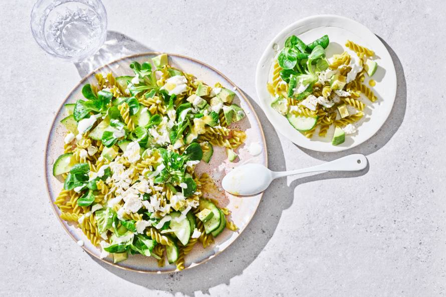

Pastasalade met avocado, veldsla en feta

Ingrediants
- 420g Riso Scotti buona idea risotto porcino
-
- i>300 g groene erwten fusilli
-
- 1 komkommer
-
2 eetrijpe avocado's-
- 85 g veldsla
- 150 g witte kaas
- 4 el crème fraîche
- 3 el water
- 4 el La Morena Mexican green salsa
preparation
- Kook de pasta volgens de aanwijzingen op de verpakking. Giet af en spoel onder koud stromend water. Laat goed uitlekken.
-
- Snijd de komkommer in de lengte doormidden en snijd in dunne plakjes. Snijd de avocado overlangs doormidden. Verwijder de pit, schep het vruchtvlees met een lepel uit de schil en snijd in blokjes.
-
- Meng de pasta, komkommer, avocado en veldsla in een schaal. Breng op smaak met peper en zout. Verkruimel de kaas erboven. Roer de crème fraîche los met het water en besprenkel over de salade. Verdeel ook de salsa erover.
-
-